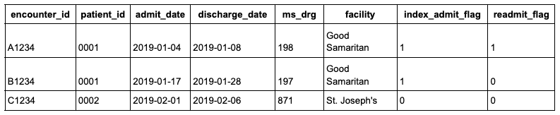
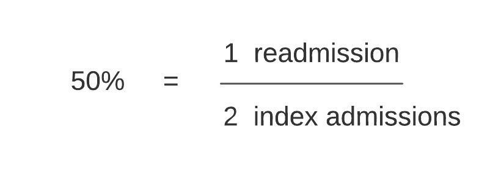
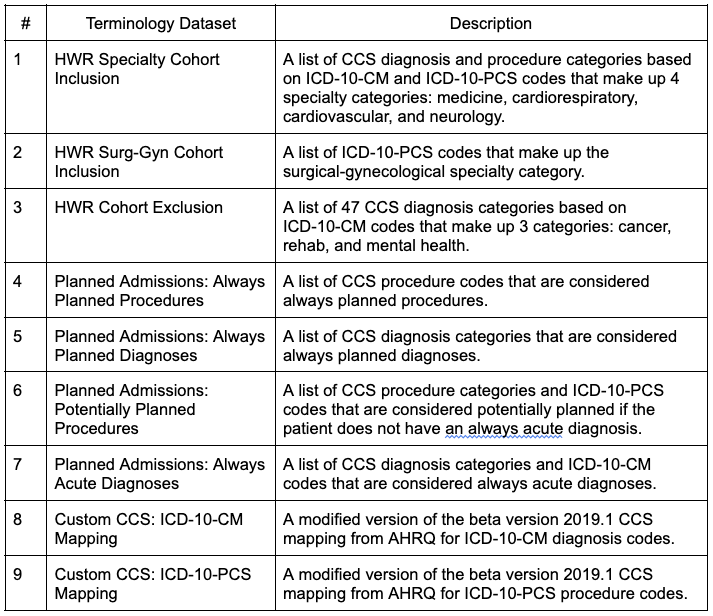
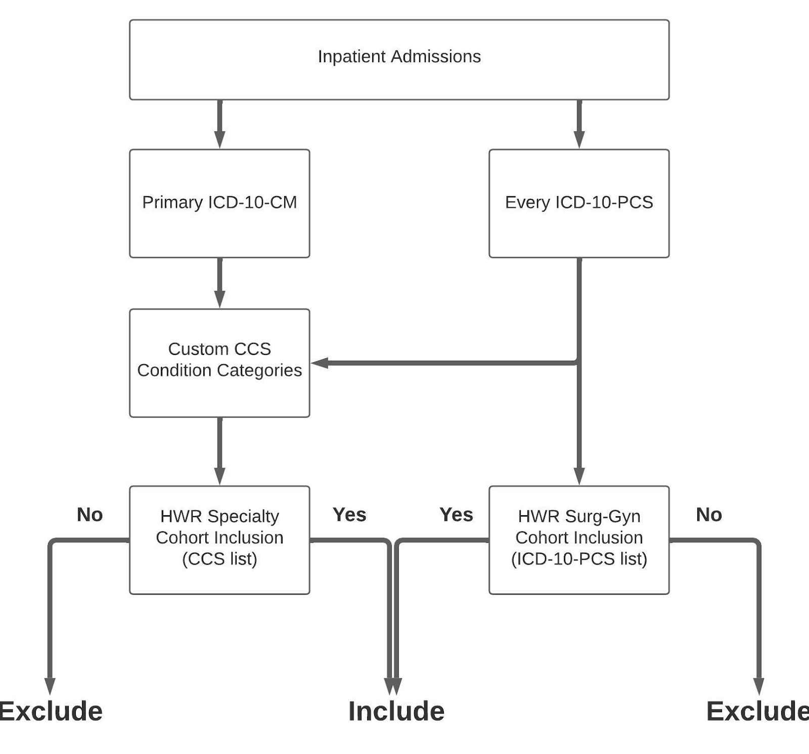
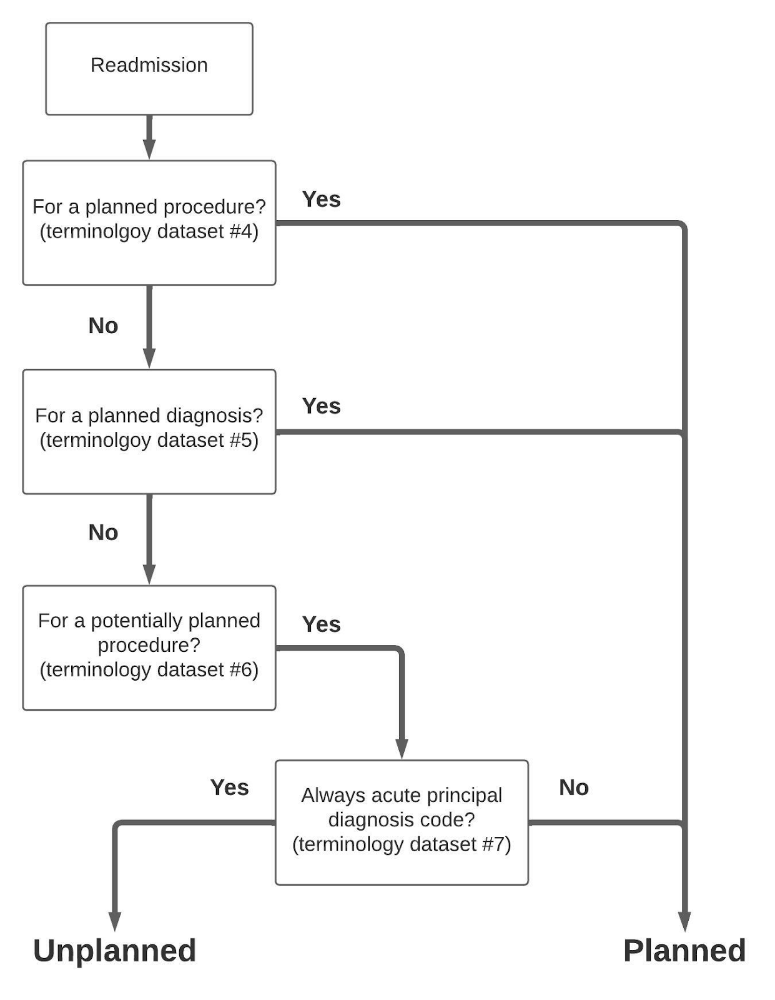
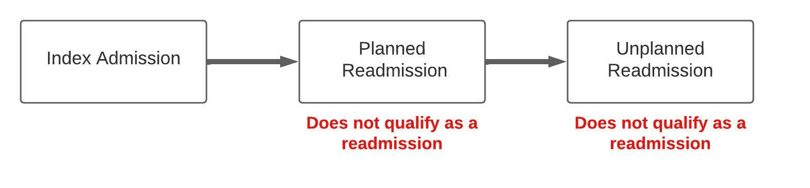
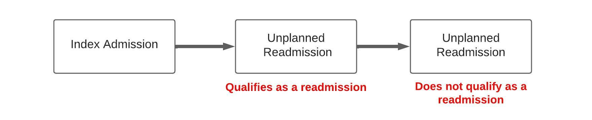

7 Hospital Readmissions
7.1 Overview
Check out these videos on how to perform proper hospital readmission analytics and how to implement the CMS readmission measures: - Performing Hospital Readmission Analytics - Implementing the CMS Readmission Measures
Hospital readmissions are one of the most common healthcare concepts. They are also one of the most complicated concepts to define and implement as code.
There are many different ways to define hospital readmission measures. However every readmission measure is built on two underlying concepts: the index admission and the readmission. An index admission is a hospitalization that should be used in the calculation of a readmission measure. There are hospitalizations that will not be index admissions and will therefore not be used to calculate readmission measures. For example, if a patient dies in a hospitalization, that hospitalization will not be an index admission, since it can’t have a readmission. There are many more pieces of logic to define if a hospitalization counts as an index admission for each different readmission measure. For example, hospitalizations for medical treatment of cancer are not index admissions.
To better understand these fundamental concepts, it is helpful to think of building a readmission measure as follows:
- Start with a data table of inpatient admissions, one record per admission.
- Use logic (defined further below) to compute two additional columns which you append to this table:
- The first column (index_admit_flag) is a binary variable that indicates whether each inpatient admission qualifies as an index admission.
- The second column (readmit_flag) is a binary variable that indicates whether each inpatient admission had a subsequent admission that qualifies as a readmission.
For example, the resulting data table might look something like this:

Figure 7.1: Example of hospital readmission records with index and readmit flag columns.
The index admission (index_admit_flag) and readmission (readmit_flag) are then used to compute the readmission measure. The sum of the index_admit_flag column forms the denominator of the readmission measure while the sum of the readmit_flag column forms the numerator. In the example data table above there are 3 total inpatient admissions, 2 index admissions, and 1 readmission, resulting in a 50% readmission rate.

Figure 7.2: Example of readmission rate calculation.
The different definitions of readmission measures are simply variations in the inclusion and/or exclusion criteria that defines the index_admit_flag and the readmit_flag. The most commonly used readmission measures are the CMS readmission measures.
There are 7 such measures grouped into 3 categories:
- All-cause Hospital-wide Readmissions (1)
- Condition-specific Readmissions (4)
- Acute Myocardial Infarction
- Congestive Obstructive Pulmonary Disease (COPD)
- Pneumonia
- Heart Failure
- Procedure-specific Readmissions (2)
- Total Hip/Knee Arthroscopy
- Coronary Artery Bypass Graft
The All-cause Hospital-wide Readmission Measure (“Hospital-wide Measure”) is the most commonly used readmission measure definition of all. The sections that follow describe how to define and implement the Hospital-wide Measure on EHR data or claims data in your data warehouse. This measure has also been encoded into the Tuva Project, including all necessary terminology datasets and data quality tests.
7.2 Data Requirements
The Hospital-wide Measure can be implemented on either EHR data or claims data. Strictly speaking, CMS developed the Hospital-wide Measure to run on Medicare FFS claims data, but CMS explicitly states in their documentation that the measure may be adapted to run against an all-payer patient population.
The data elements needed to process the readmission measure are listed below.
- patient
- patient_id
- gender
- birth_date
- encounter
- encounter_id
- patient_id
- encounter_start_date
- encounter_end_date
- discharge_disposition_code
- location
- ms_drg
- encounter_type
- condition
- encounter_id
- code
- diagnosis_rank
- code_type
- condition_type
- procedure
- encounter_id
- procedure_code
- code_type
7.3 Terminology Datasets
The Hospital-wide Measure requires several terminology datasets that are used as lookup tables to create the index admission and readmission. The following is a complete list of the terminology datasets that are needed:

Figure 7.3: List of terminology datasets needed by the hospital-wide readmission measure.
CMS makes these terminology datasets available as files on the quality net website. The links below download two Excel spreadsheets that include all the terminology datasets listed above. - https://qualitynet.cms.gov/files/60943ca9fd340b002259fe16?filename=2021_HWR.xlsx - https://qualitynet.cms.gov/files/6092ab86fd340b002259fda0?filename=YaleMod_CCS_PCS_CM_Map_v2020.xlsx
These terminology datasets are already included in the Tuva Project.
7.4 Index Admission Algorithm
The index admission algorithm is the set of sub-algorithms (i.e. rules) that together determine whether an inpatient admission qualifies as an index admission (i.e. receives an index_admit_flag = 1 or 0). Not every inpatient admission qualifies as an index admission.
Here are the sub-algorithms used by the Hospital-wide Measure:
- Cohort Inclusion Algorithm
- Cohort Exclusion Algorithm
- Discharged Alive and Not Against Medical Advice
- Not a Transfer
- Not a Same Day Admission
- Run-out
If an inpatient admission meets the criteria from all of these sub-algorithms then it qualifies as an index admission. Otherwise it does not. Below we walk through each sub-algorithm.
7.4.1 Cohort Inclusion Algorithm
The cohort inclusion algorithm is a set of rules that determine whether an inpatient admission belongs to 1 or more specialty categories. In order to qualify as an index admission, an inpatient admission must belong to 1 or more of these 5 specialty categories:
- Medicine
- Cardiorespiratory
- Cardiovascular
- Neurology
- Surgery / Gynecology
Here are the steps to implement the cohort inclusion algorithm:
Each inpatient admission should have 1 primary ICD-10-CM diagnosis code and 0 or more ICD-10-PCS procedure codes associated with it.
Map each of these codes to the custom CCS Condition Categories (terminology datasets #8 and #9). Now each inpatient admission should have its corresponding CCS diagnosis and procedure categories assigned.
For each inpatient admission, map its assigned CCS diagnosis and procedure categories to those listed in the HWR Specialty Cohort Inclusion terminology dataset (terminology dataset #1) to determine if it should be assigned to any of the first 4 specialty categories (medicine, cardiorespiratory, cardiovascular, and neurology).
For each inpatient admission, map its ICD-10-PCS codes to those listed in the HWR Surg-Gyn Cohort Inclusion terminology dataset (terminology dataset #2) to determine if the readmission should be assigned to the Surgical / Gynecology specialty category.
Inpatient admissions are successfully assigned to one or more specialty categories based on steps 3 and 4 pass this algorithm. Otherwise the admission fails and is no longer a candidate for an index admission.
Here is a diagram of the cohort inclusion algorithm:

Figure 7.4: List of terminology datasets needed by the hospital-wide readmission measure.
7.4.2 Cohort Exclusion Algorithm
An inpatient admission does not qualify as an index admission if the primary reason for the index admission was related to cancer, rehabilitation, or mental health. These categories are defined in the HWR Cohort Exclusion terminology dataset (terminology dataset #3). In order to use this dataset, first map all primary ICD-10-CM codes to the Custom CCS mapping dataset and then lookup whether each inpatient admission had any of these CCS condition categories.
Inpatient admissions that do not map to any of these CCS condition categories pass this criteria for inclusion as an index admission.
7.4.3 Discharged Alive and Not Against Medical Advice
In order to qualify as an index admission the inpatient admission must not have a discharge status of 20 (‘expired’) or 07 (‘left against medical advice’).
7.4.4 Not a Transfer
Inpatient admissions that result in the patient being transferred to another acute care facility do not count as index admissions. However, the subsequent transfer does count as an index admission if:
- The patient is discharged alive and not against medical advice
- The patient is discharged to a non-acute care setting (e.g. home, SNF, etc.)
Importantly, the transfer does not necessarily have to meet the other index admission criteria. For example, the transfer does not have to pass the cohort inclusion algorithm as long as the initial admission does.
A transfer is defined as occurring if a patient is discharged from an acute care hospital and admitted to another acute care hospital on the same day or the following day. No other criteria such as discharge status or admit source is required to define a transfer.
7.4.5 Not a Same-day Readmission
Inpatient admissions do not qualify as an index admission if the patient has a readmission to the same hospital on the same day as they were discharged for the previous admission for the same condition. In this case the readmission does however qualify as an index admission.
7.4.6 Run-out
In order to qualify as an index admission, the admission must occur at least 30 days before the last date of discharge in the dataset.
For example, suppose your dataset contains inpatient admissions that occurred in calendar year 2018. Without this rule, admissions in this dataset that occurred on the last date in the dataset (i.e. December 31, 2018) could be flagged as index admissions but would never have an associated readmission because the data does not exist. As a result the readmission measure for the month of December 2018 would be artificially low (there would be a typical number of index admissions but fewer than typical readmissions simply because the data does not exist).
7.5 Planned Admission Algorithm
The planned readmission algorithm is used to exclude planned admissions from being flagged as readmissions in the Hospital-wide Measure. Terminology datasets #4-7 are used in this algorithm.
Here are the steps to implement the algorithm:
This algorithm requires mapping the primary ICD-10-CM code to the custom CCS diagnosis categories and all the ICD-10-PCS codes to the custom CCS procedure categories for each inpatient admission (terminology datasets #8 and #9).
For each inpatient admission, check whether the CCS diagnosis and procedure categories fall under the always planned list of diagnoses and procedures (terminology datasets #4 and #5). If any match occurs, this is a planned admission.
For each inpatient admission, check whether the CCS procedure categories and ICD-10-PCS codes fall under the list of potentially planned procedures (terminology dataset #6). If any match occurs, check whether this patient had any primary ICD-10-CM code or CCS diagnosis category that is considered always acute (terminology dataset #7). If the answer is no, this is a planned admission.
Inpatient admissions that do not qualify as planned admissions based on steps #2 and #3 above are considered unplanned.
Here is a diagram of the algorithm:

Figure 7.5: List of terminology datasets needed by the hospital-wide readmission measure.
7.6 Unplanned Readmission Algorithm
An admission that occurs within 30 days of an index admission is considered a readmission if it meets the criteria below:
- Not a Planned Readmission
- Does Not Follow a Planned Readmission
- Not a Multiple Readmission
Planned readmissions are excluded from the readmission measure, as described in the previous section.
In a chain of readmissions, where the planned readmission occurs before an unplanned readmission, the unplanned readmission does not qualify as a readmission.

Figure 7.6: List of terminology datasets needed by the hospital-wide readmission measure.
In a chain of readmissions, where two or more unplanned readmissions follow an index admission, only the first unplanned readmission qualifies as a readmission. This is because the readmission flag is binary.

Figure 7.7: List of terminology datasets needed by the hospital-wide readmission measure.
7.7 Querying the Readmission DAG
Once you have successfully ran the Tuva Readmissions mart, two schemas will be populated in your data warehouse (both will appear in a database called Tuva). The first is the readmissions schema. This schema contains the views and tables corresponding to the dbt models in the readmissions DAG. Three tables in this schema are key:
encounter_augmented: lists all acute inpatient encounters with fields that give extra information about the encounter (e.g. length_of_stay, index_admission_flag, planned_flag, specialty_cohort, etc.), as well as data quality flags.
readmission_summary: lists all encounters that are not discarded due to data quality problems, together with fields giving extra information about the encounter and it’s associated readmission (if the encounter had a readmission).
encounter_data_quality: lists potential data quality issues with every inpatient encounter in the dataset. Encounters that are disqualified from being used in the readmissions analysis due to data quality issues have disqualified_encounter_flag = 1.Other columns in this table give a more granular view of which data quality problems are present for a given encounter.
To calculate the 30-day readmission rate, e.g., you must count how many rows in the readmission_symmary table were index admissions that had an unplanned 30-day readmission, and divide that by the number of rows in that table that were index admissions:
select (select count() from readmission_summary where index_admission_flag = 1 and unplanned_readmit_30_flag = 1) / (select count() from readmission_summary where index_admission_flag = 1)
A terminology schema will also appear in your data warehouse. The tables in this schema represent terminology datasets that are required to implement the readmissions logic.